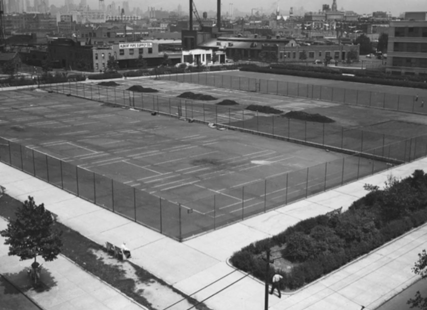
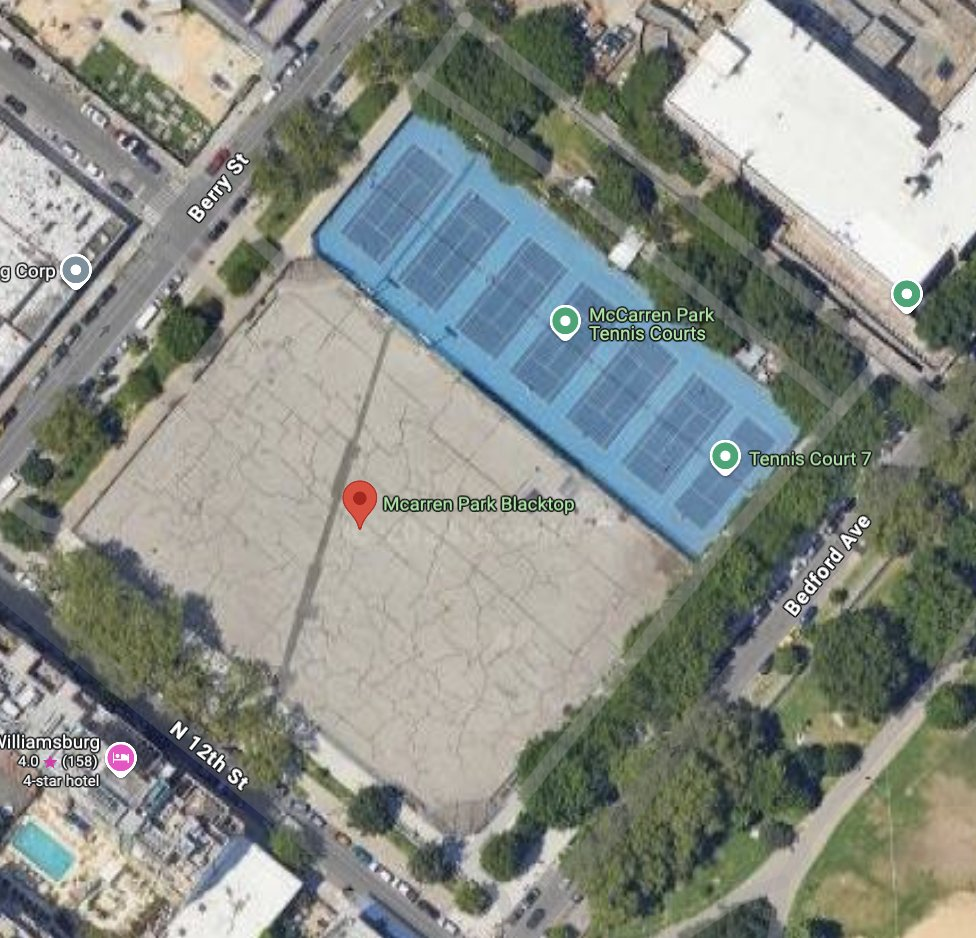

McCarren Park · N 12th St, Berry St and Bedford Ave
Seven quick questions. Just a survey: no newsletter, no mailing list, and your email is never shared. Results go to NYC Parks, Community Board 1 and Council District 33. Closes November 10.
This corner was still tennis courts in 1947. Neighbors have already shown what it can be again: the McCarren Tennis Association raised $300,000 to light all seven courts. Now NYC Parks is redesigning the lot next door, and we want to work with Parks to improve everyone's experience of McCarren Park. We're suggesting four new public courts alongside new green space and the dog run. What would you like to see here?
Then and now


Proposed option
This is the option we are presenting to NYC Parks and Community Board 1. It is built around the goals the McCarren Tennis Association has published for this lot: more accessible public courts, lighting for every court, family-friendly seating, fence repairs and better landscaping. It resurfaces the seven existing courts, adds four lit courts, turns about 40% of the asphalt into lawn, a seating berm and dog run, keeps every existing tree and about 34,000 square feet of dog run, and leaves the public sidewalks as they are. We welcome changes through the survey's ideas box.
Concept model, not a Parks design. Dimensions and the tank's extent are to be confirmed.
Drag to orbit · scroll or pinch to zoom
Seven courts resurfaced and four new ones along North 12th Street, including a show court surrounded by a grass seating berm, plus seating, shade and lawn where there is asphalt today. The seating berm can host public theater, community events, graduations and neighborhood viewing parties.
The existing seven stay under their bubble. Courts 8 to 10 can host a skating rink, with a learn-to-skate pad and a small lodge, so the corner stays busy all year. We welcome other ideas through the survey.
The funded dog run, bigger in our layout than the 30,000 square feet dog owners asked for. The city's stormwater storage. The $14.7 million already secured. We already have strong partners to help fund the new courts, and we are seeking more.
A short history
McCarren's courts are older than the pool. They drew crowds in the thousands before the Depression, and twice the people who play here stepped in to bring them back. Here is the record.
Why here, why now
North Brooklyn has fewer courts per player than Manhattan. By Parks' own court list there are nine Parks courts here for about 325,000 people, roughly 4,300 tennis players for each court; Manhattan has about 1,600 players per court. Seven of North Brooklyn's nine are paid courts for six months of the year. Community District 1 grew by 31,000 people between 2010 and 2020 and gained no courts. About 53,400 people commute into Williamsburg to work each day, on top of the visitors in roughly 1,600 hotel rooms within a mile of the park, and there is no tennis shop anywhere in North Brooklyn. Players from Manhattan already travel here for padel because tennis is harder to find; put courts here and they will play tennis.
The lot is being redesigned now. Parks has said it will bring a design to Community Board 1 before the end of the year, and design usually runs 10 to 15 months before contractors are chosen. The design that goes to CB1 sets the direction for everything after it. That is why the survey matters this month and not next year.
The survey
Seven quick questions and an optional idea box, about a minute: your ZIP code, how you are connected to North Brooklyn, whether the lot should include public courts, what you play, whether you would like more free youth programming at McCarren, what keeps you off McCarren's courts today, and an email so each person counts once. This is just a survey: every response counts the moment you press Submit, and we will not email you. Anyone in New York City can take it, and every viewpoint counts. We report North Brooklyn residents separately for Community Board 1.
Your email is not included in the results. It goes on a private internal list used only to check that each response comes from a different person, and we will not share it with anyone under any circumstances. We share the results in summary with NYC Parks, Community Board 1 and Council District 33 after the survey closes on November 10. Signing the community letter to Parks is a separate, optional box; your response counts either way.